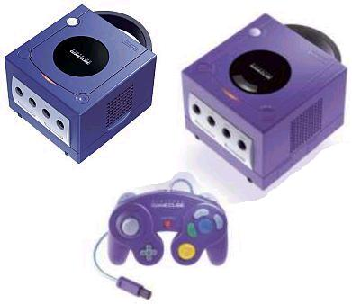

Dodano 22.06.2004r.

HISTORIA KONSOLI NINTENDO GAMECUBE
DANE TECHNICZNE KONSOLI NINTENDO GAMECUBE
GRY NA NINTENDO GAMECUBE
GALERIA
PODSUMOWANIE
NOWE NEWSY

Dodano 22.06.2004r.
Zapraszamy
Witamy w dziale Nintendo Gamecube. Znajdziecie tu opis historii konsoli, dane techniczne,gry jakie uj¿a³a konsola GCN, galeriê, która siê powoli rozroœnie, oraz podsumowanie nowego dziecka Nintendo.

Dodano 22.06.2004r.
Nowy los Nowej konsoli Nintendo. Nintendo oficjalnie poinformowa³o o zaprzestaniu produkcji konsoli Gamecube a¿ do wyczerpania zapasów. Zawieszenie potrwa do jesieni 2004r. choæ mo¿e siê to zmieniæ. Informacjê tê prasa odebra³a jako wywieszenie bia³ej flagi w konsolowej wojnie. Zaprzestanie produkcji szeœcianu Nintendo jest zwi¹zane z brakiem dop³ywu nowych gier na kostkê. Obecna sytuacja wp³ynie na obni¿enie ceny konsoli z 888 z³ do 499 z³. Naszym zdaniem konsola podzieli nied³ugo los jaki spotka³ konsolê Sega Dreamcast. Zwi¹zane mo¿e to byæ z premier¹ nowej konsoli japoñskiego giganta N5. Czy¿by czwarta generacja Nintendo-Gamecube by³a podobnym niepowodzeniem jak poprzedniczka? Bêdziemy o sytuacji tej firmy informowaæ na bie¿¹co.

Dodano 22.06.2004r.
Kolejny cios dla posiadaczy kieszonsolek. Kolejny raz Nintendo oficjalnie poinformowa³o o zaprzestaniu produkcji swojej konsolki przenoœnej Gameboy'a Advance starego typu. Nadal bêdzie produkowana jego nowsza wersja- SP. Premiera nastêpcy Gameboy'a Advance i Advance SP-Nintendo DualScreen nast¹pi prawdopodobnie na pocz¹tku roku 2005. Nastêpca bêdzie w pe³ni kompatybilny z wczeœniejszymi wersjami Gameboy'a. Jednak Nintendo nie jest pewne sukcesu nowej konsolki. Jest ona raczej odpowiedzi¹ na now¹ konsolê przenoœn¹ koncernu Sony-Playstation Portable.

Dodano 22.06.2004r.
NES nadal ¿ywy? W Japonii na GBA pojawiaj¹ siê coraz ró¿ne gry. Nie by³o by w tym nic dziwnego, ¿e pojawi siê na przenoœn¹ konsolkê zestaw gier z Nintendo Entertaiment System (w skrócie NES). Jest to ju¿ druga porcja odgrzewanych gier z NES-a. Mo¿e i u nas pojawi¹ siê dawne stare przeboje? Gdyby tak by³o odnios³y by na pewno ogromny sukces. Mamy nadziejê, ¿e Nintendo znów potraktuje nasz kraj jak normalny europejski rynek (tak by³o z premier¹ Gamecube'a-potraktowano nas jak normalny rynek).

Dodano 22.06.2004r.
Tañsze gry na Nintendo Gamecube. Gry na konsolê Nintendo Gamecube kosztuj± coraz mniej. Ostatnio ceny gwa³townie spad³y-jest to pewnie zwi¹zane z chwilowym zaprzestaniem produkcji GCN. Sklep Exe proponuje gry ju¿ od 99 z³ oto tytu³y: Pikmin-99z³; Harry Potter Komnata-119z³; Resident Evi:Code VeronicaX-79z³; Mouse-119z³; Turok Evolution-99z³; Super Smash Bros Melee-129z³; Eternal Darkness-99z³; Star Wars Bounty Hunter-129z³; Mortal Kombat DA-139z³. Równie¿ sklep Ultima.pl ma wielkie obni¿ki: zestaw z konsol¹:konsola+torba oryginalna od Nintendo+Turok Evolution lub Eternal Darkness za 589 z³, gra Metroid Prime-139z³; Eternal Darkness-99z³. Jak widaæ ceny topniej¹ co zadowoli potencjalnych nabywców gier i konsol.